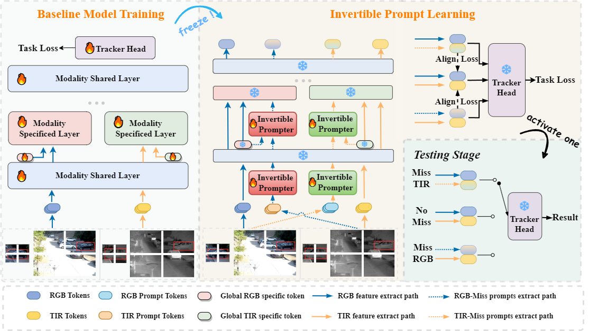
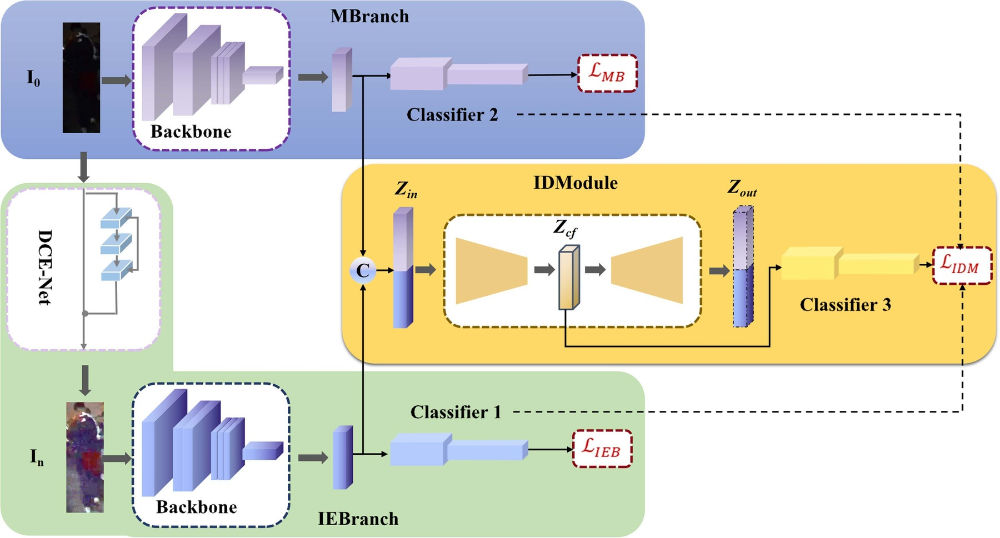
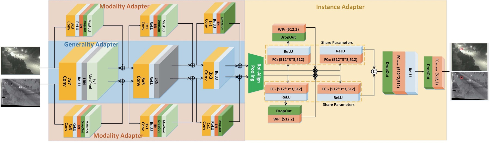

多模态视觉跟踪
面向 RGB-T、多模态缺失、复杂光照和跨模态差异场景，研究动态融合、提示学习、知识蒸馏和多层交互机制。
Academic Homepage
鹿安东，男，博士，安徽大学计算机科学与技术学院副教授。2023 年获得安徽大学计算机科学与技术工学博士学位，博士期间赴中国科学院自动化研究所智能感知计算中心王亮研究员课题组访学交流。2025 年博士后出站，并以绿色通道引进至安徽大学计算机科学与技术学院。
主要从事多模态视觉跟踪、高效视觉模型、无人机具身智能等方向的研究工作，已在 IJCV、IEEE TIP、TIFS、TNNLS、IEEE TMM、ACM MM、AAAI 等国际期刊与会议发表20余篇学术论文。主持国家自然科学基金青年项目、博士后面上项目、企业横向项目等科研项目。
Research Interests
面向 RGB-T、多模态缺失、复杂光照和跨模态差异场景，研究动态融合、提示学习、知识蒸馏和多层交互机制。
围绕动态路由、混合专家、Mamba、轻量化推理和多模态模型压缩，探索高效视觉感知模型的构建与部署。
面向无人机智能体的视觉感知、目标定位、实时跟踪与场景理解，开展具身感知与决策相关算法研究。
Selected Publications
IEEE/CVF Conference on Computer Vision and Pattern Recognition, 2026
该工作面向模态缺失 RGBT 跟踪，提出 Spatio-temporal Conditional Denoising Transformer，将当前帧空间线索与短期、长期历史时序上下文作为条件，引导可用模态特征逐步去噪。方法通过 noise-modulated adaptation 在同一框架内统一完成缺失模态重建与弱模态增强，提升动态缺失场景下跨模态表征的时间一致性和跟踪鲁棒性。
IEEE Transactions on Image Processing, 34: 4386-4401, 2025
该工作提出 attention-based fusion router，在不同层级自适应选择 RGB 与热红外信息的融合路径，缓解固定融合结构在复杂场景中的表达受限问题。模型通过路由机制增强跨模态互补性，使 RGBT 跟踪在遮挡、低照度和热干扰等场景下更稳健。
AAAI Conference on Artificial Intelligence, 2025
该工作将多模态交互从单一融合层扩展到全网络层级，并利用 progressive fusion Mamba 建模长程依赖与跨模态动态关系。方法兼顾全局上下文和逐层互补信息，为高性能 RGBT 跟踪提供了更系统的交互范式。
IEEE Transactions on Neural Networks and Learning Systems, 36(3), 2025
该工作针对 RGBT 跟踪中模态质量不稳定的问题，提出 mutual condition 与 duality-gated 机制，使两种模态能够相互约束、相互增强。方法强调低质量模态的可靠利用，而不是简单丢弃或固定加权。

International Journal of Computer Vision, 133: 2599-2619, 2025
该工作面向真实场景中常见的模态缺失问题，提出可逆提示学习框架，在缺失模态条件下恢复有效跨模态提示，并构建高质量评测基准。其价值在于把 RGBT 跟踪从理想双模态输入推进到更贴近真实部署的鲁棒感知设置。
IEEE Transactions on Information Forensics and Security, 20: 1305-1319, 2025
该工作面向夜间行人重识别中的照明退化和域偏移问题，设计协同增强网络，将图像增强与 ReID 表征学习联合优化。多域学习机制提升了模型跨夜间场景泛化能力，为低照度安全感知提供了有效方案。
IEEE Transactions on Circuits and Systems for Video Technology, 35(12), 2025
该工作关注盲多模态跟踪中输入模态状态未知的问题，引入 route-dynamic mixture of experts，让模型根据样本状态动态调度专家分支。该设计提升了模型面对模态干扰、缺失或质量波动时的适应能力。
ACM International Conference on Multimedia, 9291-9300, 2024
该工作从知识蒸馏角度解决 RGB 与热红外之间的模态鸿沟，设计耦合蒸馏机制同时传递内容知识与模态互补知识。方法帮助跟踪器学习更一致、更判别的跨模态表征，提升复杂场景下的跟踪可靠性。

IEEE Transactions on Multimedia, 26, 2024
该工作提出 illumination distillation framework，将光照相关知识迁移到夜间行人重识别表征中，并构建新的夜间 ReID 基准。该研究提升了低照度条件下身份表征的稳定性，为夜间视觉分析提供了数据和方法支撑。

IEEE Transactions on Image Processing, 30: 5613-5625, 2021
该工作提出多适配器网络与层级差异约束，在共享表征和模态专属表征之间建立更合理的协同关系。该方法为 RGBT 跟踪中的跨模态特征适配提供了早期且有影响力的解决思路。
Academic Services
担任 IEEE TPAMI、IJCV、IEEE TIP、IEEE TMM、Information Fusion、CVPR、AAAI、ACM MM 等期刊与会议审稿人。
Contact
欢迎围绕多模态视觉跟踪、高效模型、无人机具身智能及相关方向开展学术交流与合作。